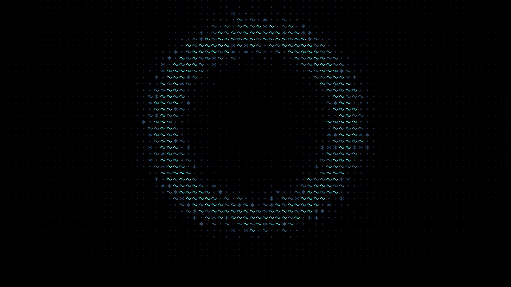

Brand · The house
khyzr.ai
khyzr.ai keeps khyzr's name, wordmark, symbol, and typeface. What is its own is a black ground and one ramp of light, periwinkle to aqua, that appears only on what is active.
khyzr, on black.


Black leads. Color is rare.
khyzr.ai is one of khyzr's two products. It keeps the name, the wordmark, the symbol, and the typeface, and sets them on black.
- From khyzr: the name, the wordmark with .ai set after it, the symbol's drawing in this product's colors, Outfit at three weights, and the voice.
- Its own: the black ground, the ramp, the glyph marks, and the words on its button: "Get started".
- Not carried over: khyzr Green, the white page, khyzr's four backgrounds, labels in Manrope, pill buttons, and photography.
- khyzr appears in the name, and nowhere else on a khyzr.ai surface: no khyzr logo beside it, and no green. See The house.
In one line.
Agents for the whole business.
- The longer line, where one is needed: AI agents that run inside your own AWS account.
- Both are the site's own words, as it stands.
Wordmark or icon. Never both.
The wordmark is khyzr's own, with .ai set after it. The icon is khyzr's symbol in the ramp. A surface carries one or the other.
| Ground | The wordmark | File |
|---|---|---|
| Black, or any dark ground | khyzr in the light ink, .ai in Periwinkle | khyzr-ai-wordmark_on-dark |
| White, or any light ground | khyzr in near-black, .ai in Periwinkle | khyzr-ai-wordmark_on-light |
| One ink, on a light ground | Black | khyzr-ai-wordmark_black |
| One ink, on a dark ground | White | khyzr-ai-wordmark_white |
- The dark cut is the default. khyzr.ai lives on black.
- The .ai is the only colored piece of type the product has.
- The wordmark sits at the left: the top left of a page, the lower left of a slide.


| Where | The icon | File |
|---|---|---|
| On black, at 24px and up: a seal, an end mark, a square space | The dark cut, bare | khyzr-ai-symbol_on-dark |
| An avatar, an app tile, a browser tab, and anything smaller | The dark cut on its deep blue tile | khyzr-ai-symbol_on-dark_badge |
| On white, at 24px and up | The light cut, bare | khyzr-ai-symbol_on-light |
| An avatar on a platform that is itself black | The light cut on a white tile | khyzr-ai-symbol_on-light_badge |
- The icon is never one color. A one-color job takes the black or the white wordmark.
- On khyzr.ai's own black pages the icon keeps its deep tile.
- The rules every product mark follows are on the Logos page.
Size and room
| Mark | Smallest on screen | Smallest in print | Clear space, every side |
|---|---|---|---|
| Wordmark | 20px tall, 66px wide | 5 mm tall | The height of the z |
| Icon | 24px | 8 mm | One blade: two fifths of the icon |
| Icon on its tile | 16px | 6 mm | One blade, measured from the tile: about a quarter of the tile |
Black leads. Color is rare.
A khyzr.ai surface is black, with light ink for the words. Color arrives last and small, on the one thing that is active.
- A working ratio, not law: black 80 · raised black 17 · ink and gray 2 · color 1.
- A cover may carry twice that color, in the ring. A working slide or page carries less.
- Color never fills a slide, a page, or a panel. It is a line, an edge, a mark, a dot.
- Type is Ink, or Ink 2 for the quieter line. No colored word in a headline, and no gradient in type.
- The black is true black, not a dark gray and not a dark blue.
One ramp, four jobs.
Ground
Hairlines
Ink
Accent ramp
The ramp runs from Periwinkle through Blue and Cyan to Aqua, every stop bright. Each stop has a job.
| Stop | Its job | In a chart |
|---|---|---|
| Periwinkle | The .ai of the name. The ring around what has focus. The far end of a lit line | Plans and forecasts |
| Blue | What is selected | Actuals |
| Cyan | The hot stop: a button under the pointer, the lit edge of a frame | The value in focus |
| Aqua | What is live. The near end of a lit line | The peak, or the one value to see |
- The four in order are the four stops of the specimen above, first to last.
- The ramp marks what is active: selected, in focus, live, or the one value to see. What is at rest is ink, gray, and hairlines.
- A lit line runs Aqua at the top left to Periwinkle at the bottom right. It runs along an edge or a rule, never across a field.
- A glow marks one active thing on a surface. Nothing else glows.
- On black, all four stops can carry a line or a mark. As small text, none of them: text is Ink.
The grounds and the inks
- Black is the page, the slide, and the ground of every still.
- Raised is a plate or a panel one step up from black. Closing plate is a shade under it, for the panel a piece ends on.
- Hairline and Hairline, strong draw every rule and border. On a projected slide, use the strong one.
- Ink is headings and the words that matter. Ink 2 is the continuation, the caption, the supporting line.
- The grays lean faintly blue. A neutral gray from another palette looks wrong beside them.
Colors that stay inside the product
Inside the product's own window there is more color: an identity pair for each of its six agents, a ramp of four for each of its seven capabilities, and green, amber, and red for status.
- They appear inside the window, and where one agent or one capability is the subject.
- They never dress a page, a slide's ground, the name, or a button.
- One at a time. The selected capability shows its color; the others stay gray.
Outfit, in three weights.
Black leads. Color is rare.
One typeface, Outfit, at Semibold, Medium, and Regular. No second face, no labels in capitals, no italic.
| Role | Size, against body text | Weight | For |
|---|---|---|---|
| Display | About four times | Semibold | The one headline of a cover or a first screen |
| Featured | Twice | Medium | A closing line, a step's name |
| Statement | One and a half times | Medium | The first line of a head, in Ink |
| Continuation | A little under the statement | Medium | The second line of a head, in Ink 2 |
| Title, lede | A little over | Medium, Regular | A card's title, the line under a headline |
| Body | The base | Regular | Running text |
| Small | A little under | Regular, Medium for a label | Captions and labels |
- A head is two lines: a statement in Ink, then a continuation in Ink 2, at one weight and nearly one size, with no gap between them.
- Sentence case, and a period at the end of every headline.
- Emphasis is by ink, never by weight, color, or italic.
- Nothing above a headline: no label, no number, no rule.
- Large type is set tight. Type is never letterspaced wide.
- Heads are centered. What stands under a head is set left.
- Numbers that are compared line up in columns.
The glyph marks.
khyzr.ai writes light in four small marks on a grid: a dot, a large dot, a six-point star, and a tilde. They are its texture, in the place of khyzr's backgrounds.
- As the light grows, a cell reads a dot, a large dot, a star, then a tilde. Where there is no light, the cell is empty.
- The marks sit on a square grid, one to a cell. A field made from them keeps the grid.
- A mark is Ink, or one stop of the ramp. It is never outlined, never filled with a gradient, never redrawn.
- They write figures: a ring, a numeral, a band. They are never a bullet, an icon, or a letter.
- The mesh and the logo pattern are khyzr's, and stay green. khyzr.ai uses neither.
| File | What it shows | For | Shape |
|---|---|---|---|
khyzr-ai-rings_on-black_ring_3840x2160 | The whole ring, inside the frame | A cover. Cropped about the ring, a square post | 16:9 |
khyzr-ai-rings_on-black_held_3840x2160 | The ring around the place of a headline | A title: the words sit inside the ring | 16:9 |
khyzr-ai-rings_on-black_open_3840x2160 | An arc at each side and a wide dark middle | A divider or a statement, the words in the middle | 16:9 |
khyzr-ai-glyph-band_on-black_3840x328 | A band of marks, with the icon as its seal | The foot of a closing slide or of a page | A strip, 12:1 |
khyzr-ai-numeral-1_on-black_720x1056, and 2 and 3 | 1, 2, and 3, written in the marks | The numbers of a real sequence of three steps | Upright, 2:3 |
glyphs/khyzr-ai-glyphs_on-black.svg, and each mark alone | The four marks as vectors | Making a new field |
- Every still stands on black. Set on black, its edges disappear.
- The band carries the icon, so a surface that shows the band sets no wordmark.
- Numerals exist for one to three. A longer sequence takes dots.
The product is the picture.
Where another brand sets a photograph, khyzr.ai sets its own window.
| File | What it shows | For | Shape |
|---|---|---|---|
khyzr-ai-console_on-black_3000x1762 | The console window, with the light behind it | A slide, a one-pager, or a post that shows the product itself | 17:10 |
- The company and the numbers in the window are made up for the demo. Show the window; never quote it as a result.
- No photographs, no people, and no illustration.
- Frames: a hairline, and small corners. About 6 on a control, 12 on a card, 16 on a window or a large picture. A band that spans the page is square. No pill-shaped buttons.
- Depth is light, not shadow: a frame's edge is lit from white at its top left to Cyan at its bottom right, and one soft light stands behind the object that matters.
- Icons are thin line drawings: one even stroke, round ends, open outlines, no fills. Gray at rest, in color only when selected.
How it speaks.
khyzr.ai speaks as khyzr does. The rules are on the Voice page. These are its own habits.
- A head is two sentences: a short claim, then its proof or its limit.
- Every headline and caption ends on a period, the three-word ones too.
- Plain nouns and short statements. The reader is "you", and khyzr is "we".
- Numbers are small and exact.
- It reassures by saying what will not happen.
- A step is named in one word.
- Inside the product, an agent answers like a colleague: the verdict first, then what it did.
- No exclamation mark, no arrow, no dot or dash as a separator, no label in capitals.
- The name is khyzr.ai, lowercase, wherever it stands.
- The one action is "Get started".
- American spelling.
In use.
Its deck
- Every slide is black. Titles are Medium; Semibold is kept for the cover, the dividers, one big number, and the closing.
- The cover is the ring, held, with the title inside it, centered. A divider is the ring, open, with the words in the dark middle.
- A working slide is set left: the wordmark at the lower left, a title in Ink, its continuation in Ink 2.
- The product is shown whole: the console on black, with a caption under it.
- Three steps take the three numerals, with the words under each.
- A chart: Blue for actuals, Periwinkle for plans, Aqua for the one value to see. Everything else is gray.
- The closing is one centered line over the glyph band, with the icon as its seal and no wordmark.
A post
- Black, with one still: the ring cropped about its center, or the console.
- One statement in Ink, and its continuation in Ink 2. Nothing else in type.
- The wordmark at the lower left, or the band with its seal. Never both.
- The avatar is the icon on its deep tile.
On paper
- khyzr.ai is black on every screen. Paper may be white.
- On white: the wordmark's light-ground cut, near-black type, and Periwinkle as the one accent, for a rule, a dot, or a line on a chart. The other three stops are too light for white.
- The glyph marks, the stills, and the console keep their black: set them as a black panel, never on white.
- Periwinkle, Blue, and Aqua print duller than a screen shows them. For a cover, or a full black page, ask the printer for a proof.
The values.
For anyone who needs the numbers. Print values are for coated paper.
| Color | Screen | Print, C M Y K |
|---|---|---|
| Black | #000000 | 89 78 62 97 |
| Raised | #0D0F10 | 80 72 62 89 |
| Closing plate | #0B0C0E | 82 74 61 91 |
| Hairline | #1B1D1F | 77 68 60 80 |
| Hairline, strong | #292C2D | 73 62 58 70 |
| Ink | #E0E9F0 | 14 6 5 0 |
| Ink 2 | #818B91 | 51 36 34 14 |
| Periwinkle | #7280FC | 65 53 0 0 |
| Blue | #62A5FA | 60 29 0 0 |
| Cyan | #52CAF7 | 60 0 1 0 |
| Aqua | #43F0F4 | 56 0 16 0 |
| The icon's tile | #022853 | 100 87 41 36 |
| The wordmark's near-black, on light | #070809 | 84 75 62 93 |
- No Pantone numbers are set. Where a color must be exact, the printer matches it against a proof.
- The swatches for design tools are in
khyzr-ai-palette.ase. - The marks are in the khyzr.ai logo pack, and the stills in its artwork folder, each as PNG and JPG.
- The site as built, value by value, is on khyzr.ai as built.